Introduction
Fractals are fascinating mathematical objects that captivate the imagination with their self-replicating patterns and infinite complexity. These shapes, while deeply rooted in advanced mathematics, can be introduced to school students using simple ideas, making them both an educational and exciting topic. In this article, we’ll explore fractals from a foundation perspective, focusing on intuitive examples and hands-on explorations that bridge the gap between simple geometric patterns and the infinite wonders of fractal geometry.
Voyage Through The World of Fractals
Behold, this infinite mathematical universe. A dizzying cascade of fractals. Arrays of complex patterns filled with both satisfying self-similarity and surprising, novel features. Each iteration delves deeper into a realm where order and chaos intertwine, revealing intricate structures that defy our intuition.
All of the structure and the patterns that you see there really do exist for a reason. There is some sort of innate mathematical cause behind all of the phenomena that you see. ~ Alex Kapiamba (Mathematician, Brown University)
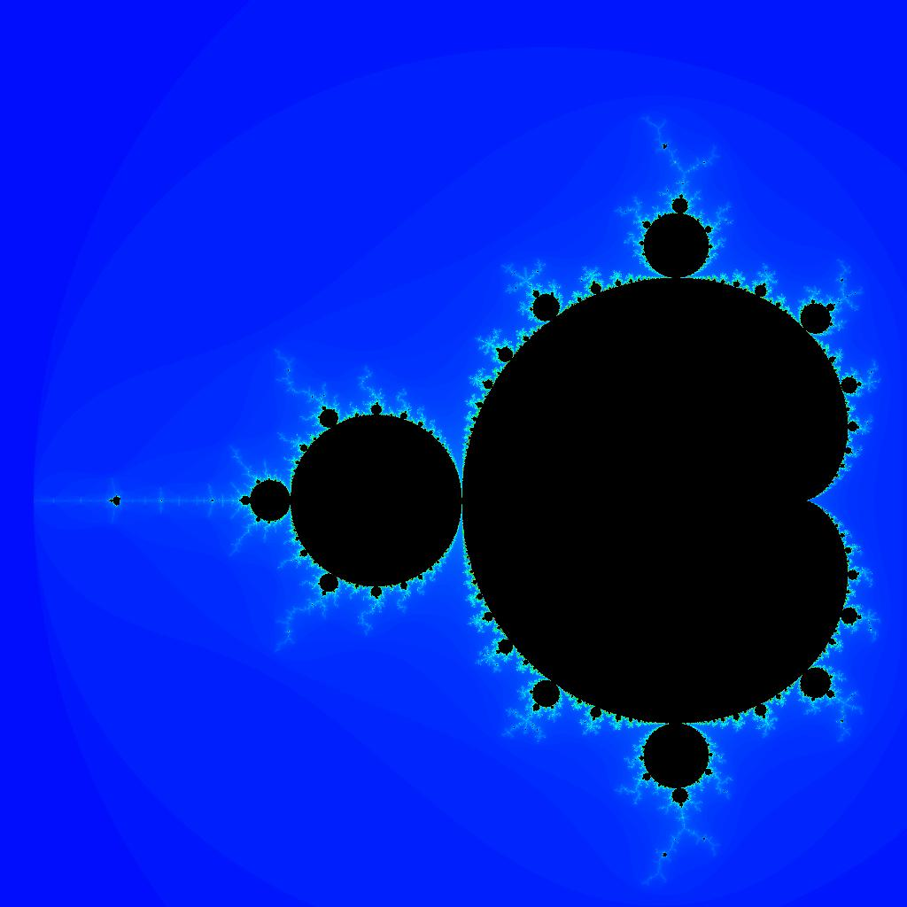
This is the Mandelbrot Set. These trippy images represent a form of modern algorithmic exploration, one made possible by computers. A handful of mathematicians have devoted their lives uncovering this set’s secrets.
It plays a very central role in our understanding of much more complicated systems. It’s step number one ~ Laura Demarco (Mathematician, Havard)
The Mandelbrot set is a perfect example of how a simple rule can produce incredible complexity. At it’s core the set is generated by iterating a quadratic equation, \(f(z) = z^2 +c\), a simple formula whose highest exponent is \(2\). To iterate a quadratic equation, choose a value for the variable, plug it into the function, then take the output and feed it back in again and again. The study of how recursive functions like these changes over time is central to a field of math called ‘Complex Dynamical Systems’.
This subject emerged to comprehend the tangible world. What mathematical principles underlie the physical realities we observe? One of the earliest and most crucial examples is the solar system. We delve into dynamical systems, where a set of rules governs the evolution of a space over time, determining the movements and transformations within it.
Starting From The Root
Consider, for instance, the simple function \(f(z)=z+1.\) In this context, we start with an initial value of \(z\)and evaluate the function. The result is then used as the new input parameter, and the function is evaluated again. This iterative process can be formally described as follows:
Start with an initial value \(z_0\).
Compute \(z_1=f(z_0)=z_0+1.\)
Use \(z_1\) as the new input to compute \(z_2=f(z_1)=z_1+1\), and so forth.
Mathematically, this generates a sequence \(\{z_n\}\) where \(z_{n+1}=f(z_n)=z_{n}+1.\) This sequence clearly grows without bound, illustrating a simple yet profound example of iterative processes in dynamical systems. Such iterations lay the groundwork for understanding more complex functions and their behaviors, which ultimately lead to the rich, intricate patterns observed in fractals.
Finally we’ll see that,
\[ f(0) = 0+1 =1 \]
\[ f(1) = 1+1 = 2 \]
\[ f(2) = 2+1 =3 \]
\[ \text{and so on}\ldots \]
The pattern here is straightforward: we evaluate the function, use the result as the new input, and re-evaluate the function. In this simple case, observing the pattern is easy, as the value increases by one with each iteration. While this example is quite basic, Mandelbrot extended this concept significantly further.
Mandelbrot studied the function \(f(z)=z^2+c\). To illustrate this with a simple example, let’s choose \(c=1\). Therefore,
\[ f(0) =1 \]
\[ f(1) =2 \]
\[ f(2) = 5 \]
\[ f(5) = 26 \]
It becomes apparent that the values will rapidly spiral out of control this time and diverge to infinity. Now let’s try plugging in \(-2\). Therefore,
\[ f(0) = -2 \]
\[ f(-2) = 2 \]
\[ f(2) =2 \]
This process will continually yield the value \(2\). By repeatedly evaluating \(f(2)\) and obtaining \(2\), this iteration continues indefinitely. Consequently, this indicates that \(-2\) lies on the boundary of the Mandelbrot set. To visualize this concept, let’s draw a number line.
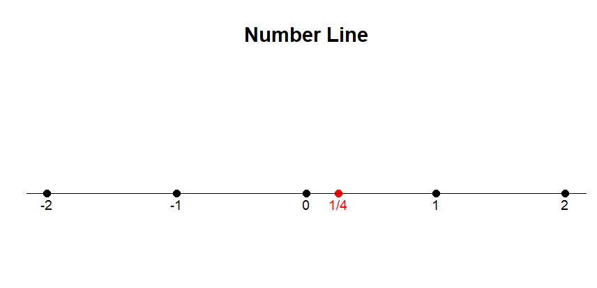
Here, \(-2\) represents the largest magnitude that remains bounded and does not diverge to infinity when iterated from \(0.\)
Let’s try plugging, \(c= -2.1\). Therefore,
\[ f(0) = 0^2 - 2.1 = -2.1 \]
\[ f(-2.1) = (-2.1)^2 -2.1 = 2.41 \]
\[ f(2.41) = (2.41)^2- 2.1 = 3.81 \]
\[ f(3.81) = (3.81)^2 -2.1 =12.5 \]
Consider the parameter \(c=−2.1.\) Through successive iterations of the function \(f(z)=z^2+c\), we embark on a journey: \(-2.1, 2.41, 3.81, 12.5\), and so forth, each value exponentially greater than the last. This vividly illustrates that the Mandelbrot set’s boundary is encapsulated by \(-2\), beyond which values spiral into infinity.
Now, let’s shift our focus to the positive boundary. Surprisingly, it resides at \(c=\frac{1}{4}\), a less intuitive revelation. When we substitute \(\frac{1}{4}\) for \(c\), the sequence inches closer and closer to \(\frac{1}{2}\), but never quite reaches it. Any departure beyond \(\frac{1}{4}\) propels the sequence into an unbounded trajectory towards infinity.
We may visually represent this by shading the region between these two values on a number line, symbolizing the real numbers encompassed by the Mandelbrot set. The interval stretches from \(-2\) to \(\frac{1}{4}\), delineating the scope of this fractal phenomenon. At this juncture, some individuals might conclude their exploration. However, what follows promises a journey into deeper complexity.
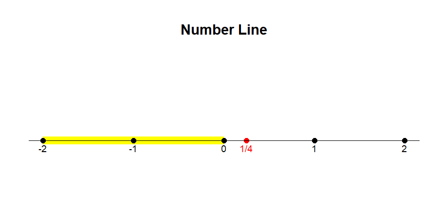
Elementary Complex Number
A complex number is defined as the sum of two components, a real part and an imaginary part. Each complex number can be visualized as a point of a 2D plane. The real part is a number found on the number line. The imaginary part is a multiple of the \(\sqrt{-1}\), which the mathematicians write as \(i\). Despite the name, imaginary numbers play a vital role in solving real-world problems. Let, start with a simple quadratic equation \(f(z) = z^2 +c.\)
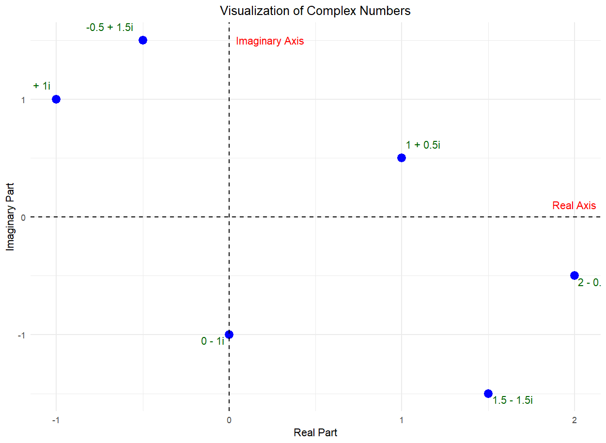
Choose a value for \(c=-1\) for example. Then consider what happens when you iterate this equation for every possible starting value.
You repeatedly apply the function to the sequence of numbers that you’re generating, and you ask whether or not that sequence is going off to infinity or whether it stay bounded.~ Laura Demarco (Mathematician, Havard)
For some initial values, your equation speeds off to infinity while iterating like these.These values are not in the Julia set. When you start iterating from other initial values, you might instead get a sequence of outputs that stay bounded.
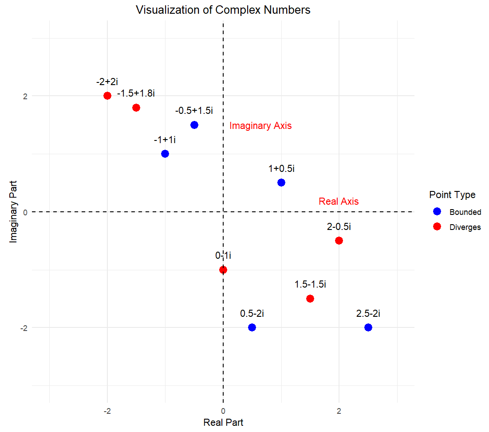
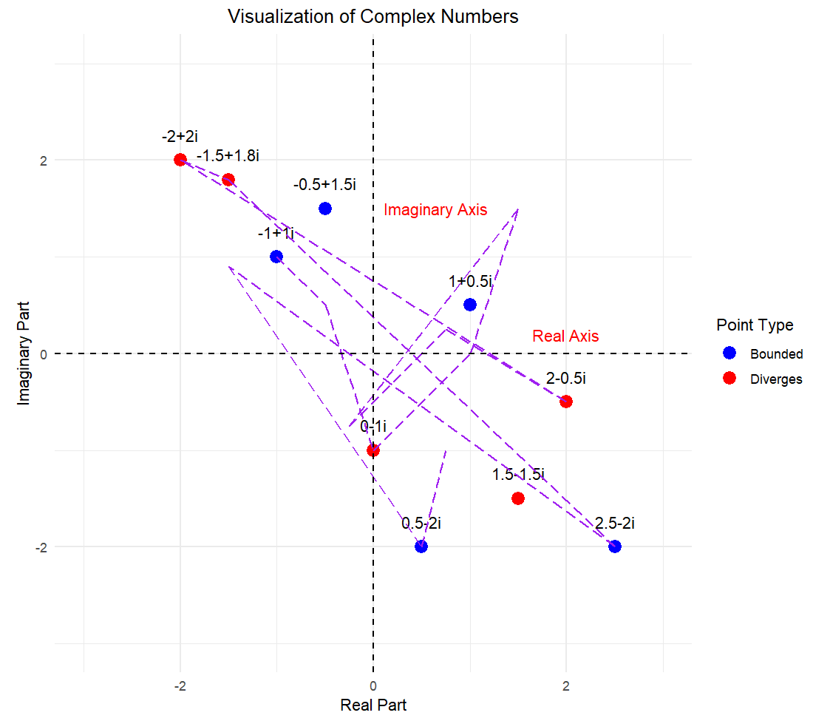
When something comes back to itself, we often call that recurrent behaviour, & that’s where the complexity arises.
Let’s quickly explore the realm of complex numbers. The square root function identifies a number which, when multiplied by itself, yields the number under the radical. For instance, \(\sqrt{4}\) implies that since \(2\) times itself is \(4\), \(\sqrt{4}\) is \(2\).
Now, let’s consider the square root of a negative number. For example, what if we have \(\sqrt{-4}\)? Can you identify a number which, when multiplied by itself, equals \(-4\)?
The answer is you can’t, because there are no real numbers that satisfy this condition. This is because the square of any real number is always non-negative.
Similar questions arise with \(\sqrt{−1}\). What is the square root of \(-1\)?
The answer is that there are no real numbers that satisfy this condition. To address this, mathematicians introduced the concept of imaginary numbers. The square root of -1 is defined as \(i\), where \(i\) is the imaginary unit. Also, now we can answer about \(\sqrt{-4}\) i.e., \(\sqrt{-4} = 2i \times2i = (2.2) \times (i.i) = -4\).
Extension of \(f(z) = z^2 +c\) With Imaginary Number
So, Mandelbrot wanted to inlcude imaginary numbers as well in his analysis of his function.
\[ f(z) = z^2 +c \]
Let’s try plug in \(i\) for \(c\) i.e., \(c =i\).
\[ f(0) = i \]
\[ f(i) = (i)^2 +1 = -1+i \]
\[ f(-1+i) = (-1+i)^2 + i = -i \]
Continuing the iterations by hand becomes increasingly complex, so we will pause here. It’s important to note that \(i\) is not included in the Mandelbrot set, as this function diverges to infinity. To visualize this, we can set up an imaginary number line. The bounds for this function are approximately \(-0.6i\) & \(0.6i\).
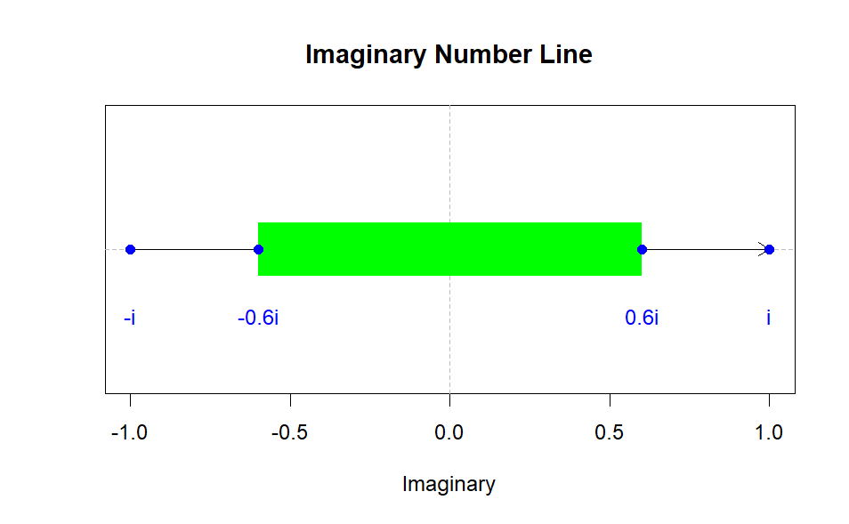
Many mathematicians might have stopped at this point, having defined the set for all real numbers and all imaginary numbers. However, there remains one more set of numbers to explore: complex numbers. Complex numbers consist of both a real and an imaginary component. This extension allows us to include complex numbers in our number system. A complex number can be expressed in the form \(a+bi\), where \(a\) and \(b\) are real numbers. This could be something as simple as \(1+i\) or as complex as \(6+9i\). If we let 𝑐c be any complex number, it can represent any combination of real and imaginary components.
Roughly \(-0.2 +1.12i\) is included in the Mandelbrot set
But where do we place this on the number line? We can’t simply put it above \(−0.2\) because we have \(0.2+1.12i\), where the real part is \(−0.2.\) If only there were some way to simultaneously represent both real and imaginary components. We need something like this:
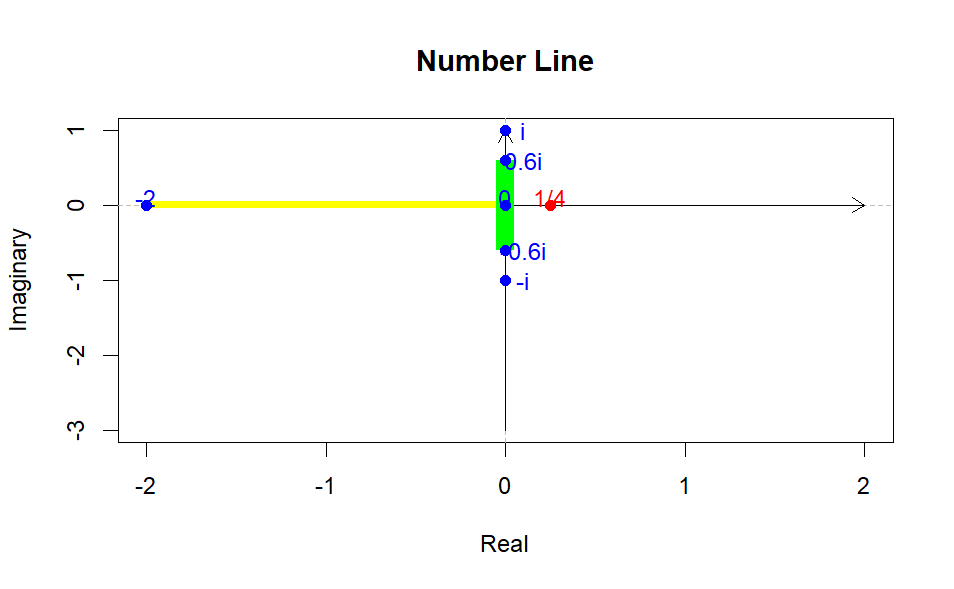
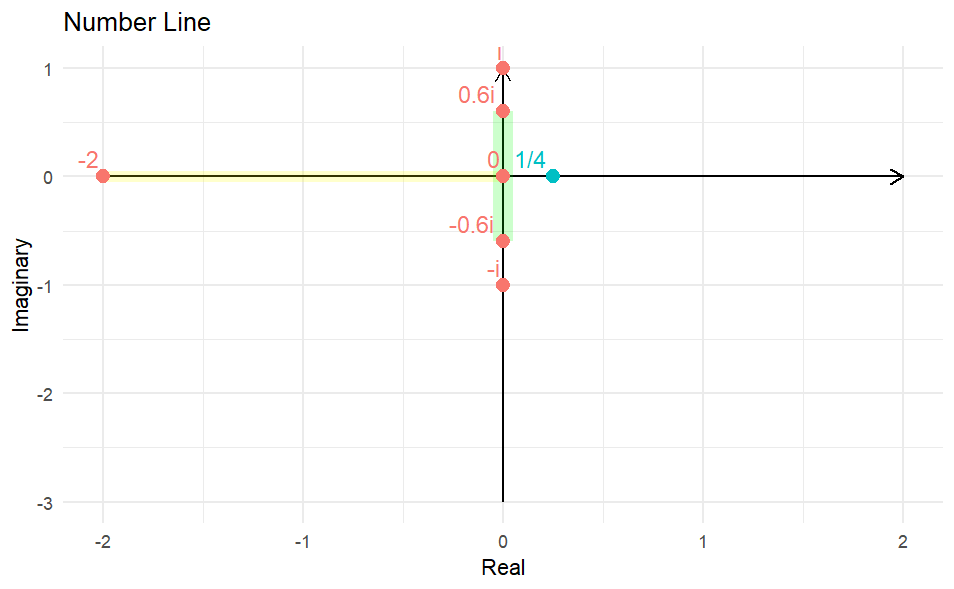
In this complex plane, we can plot complex numbers in the form \(a+bi\). The horizontal axis (real axis) represents the real part \(a\), and the vertical axis (imaginary axis) represents the imaginary part \(bi\). In this complex plane, each point \((a,b)\) corresponds to the complex number \(a+bi\). This way, both the real and imaginary parts of the number can be viewed together.
Given this framework, we are equipped to graph the Mandelbrot set. The Mandelbrot set consists of all complex numbers \(c\) for which the iterative sequence defined by the recurrence relation \(z_{n+1} = z_n^2+c\) (with \(z_0=0\) ) does not diverge to infinity. Mathematically, the Mandelbrot set is the set of all \(c\) in the complex plane such that the magnitude of \(z_n\) remains bounded as \(n\) approaches infinity. This intricate and beautiful set reveals the boundary between stability and chaos in complex dynamics, showcasing both self-similarity and fractal structure.
The Discovery of The Mandelbrot Set
The first rough plot of the Mandelbrot set appeared in a 1978 paper by the mathematicians Robert Brooks and J. Peter Matelski. Soon after Benoit Mandelbrot, a researcher at IBM, who had access to more computing power, also discovered the set. This led to further explorations.
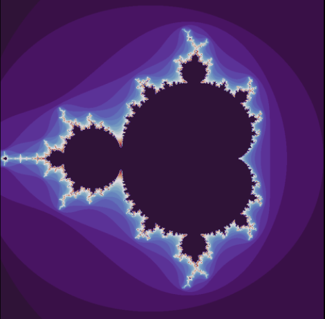
These early computer graphics were crude, but the patterns revealed the presence of something far more complex.
Even with fuzzy, poorly made pictures in the eighties, they were able to glean a lot of interesting insight into what was going on.
Mandelbrot went on to popularize his now-eponymous set to the world and became known as the father of fractals. Today mathematicians can use computers to explore the Mandelbrot set in far greater detail.The Mandelbrot set is drawn in the complex plane.Instead of iterating all values of \(z\) for a fixed value of \(c\), we fix the starting value of the iteration at \(0\) and vary \(c\). Value of \(c\) where iteration of \(z^2+c\) stays bounded inside the Mandelbrot set. while those that go to infinity are not. Mathematicians analyzed this shape and found some very intriguing things about it. What’s amazing about the Mandelbrot set is that you can zoom in infinitely, and you’ll keep finding new shapes. You can keep finding more and more copies of the Mandelbrot set no matter how far you zoom in. You could even zoom in close to something like this
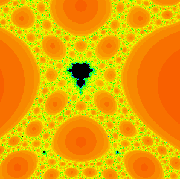
and it takes a while, but look there’s another baby Mandelbrot set. Alternatively, you could go into this region and find completely different things. The Mandelbrot set has many intriguing features, but the biggest mysteries lie in its complex fractal boundary. Zooming into different boundary regions reveals some astounding features. A valley of seahorses, parades of elephants and a miniature version of the set itself. On the figure below, you’ll find these weird elephant-shaped things (Elephant Valley) that have spirals that go on forever and you could even zoom into the side of one of the spirals and find new spirals that repeat infinitely and keep generating new infinite patterns like this.
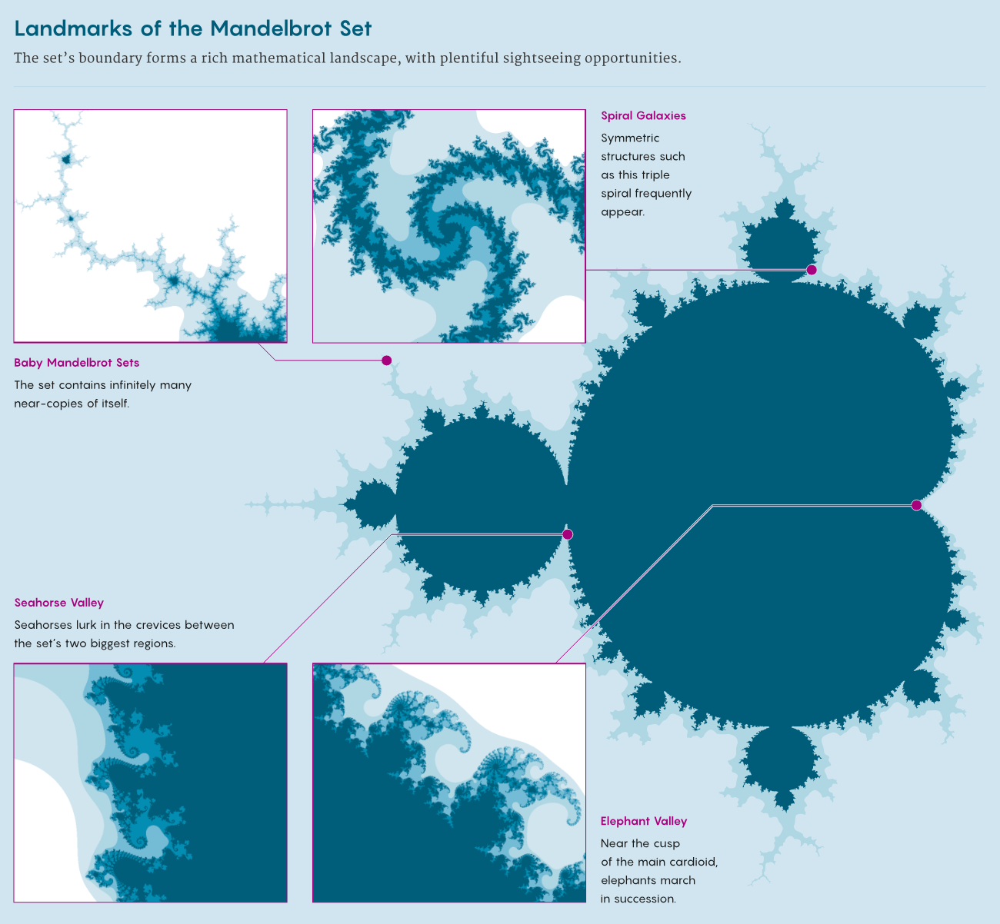
Or you could go to the other side of the elephants & find these weird seahorse-shaped (Seahorse-Valley) things that have different kinds of spirals that are connected to each other. Once again they keep going on forever, you can zoom in infinitely & you’ll keep finding new patterns.
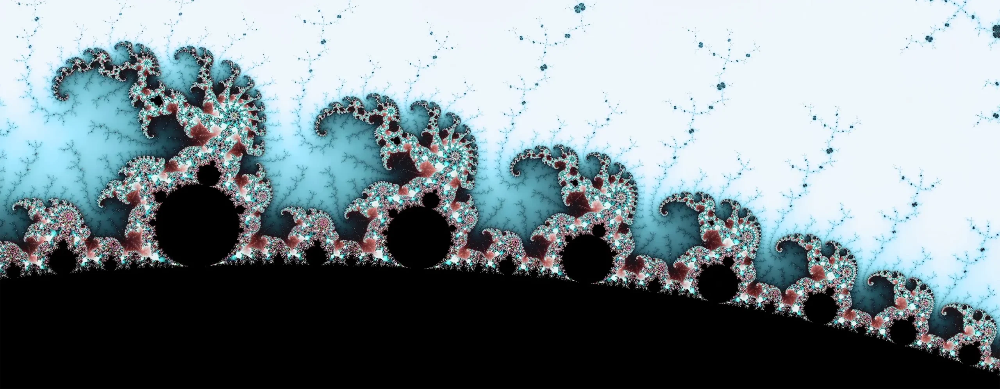
So, we can sort of keep finding nests, a sequence of smaller and smaller Mandelbrot sets. all one inside of the next.
Every time you explore the Mandelbrot set, you can find brand new things, possibly things that no human has ever seen before. As we’ve just discussed, there is infinite complexity and infinite information in this one shape. That’s why this little shape is so remarkable. We didn’t invent this cause we discovered it by accident, but we did not discover it in our universe. It has infinite complexity, so it can’t possibly be in our universe because the universe doesn’t have infinities. We discovered this by calculating.
References
Devaney, R. L. Baby Mandelbrot Sets Adorned with Halos in Families of Rational Maps. In Complex Dynamics; Twenty-Five Years After the Appearance of the Mandelbrot Set. Amer. Math. Soc. Contemporary Math 396 (2006), 37–50.
Science and the Sacred Heart: Hello, Mandelbrot Set! Published by Elizabeth Scalia
Is God a Mathematician? Fractal Geometry of Nature.Published by Sakshi pathak
Generalized Mandelbrot Sets of a Family of Polynomials \(P_n(z) = z^n + z + c; (n \ge 2)\) (https://doi.org/10.1155/2022/4510088)